The Design Brief
The goal was a topology that mirrors how a real enterprise WAN is architected — not a simplified lab exercise, but something with the full stack of controls that infrastructure teams actually run in production. Two geographically separate regions, each with its own security perimeter, edge routing, internal switching fabric, and services infrastructure, connected over a simulated WAN through a dedicated GRE tunnel.
Every design decision was made with two constraints in mind: resilience and security. Resilience means the network continues to function correctly when topology changes — which is why static routing was replaced with OSPF. Security means traffic is segmented, perimeter-enforced, and every control maps to a justification — which is why VLANs, ASA security zones, ACLs, port security, and NAT are all present and documented against ISO 27001 clauses.
Cisco Packet Tracer was chosen because it simulates layer-2 and layer-3 behaviour with enough fidelity to surface real production bugs. Every failure in this build — all 15 of them — is the kind of failure that happens on physical hardware.
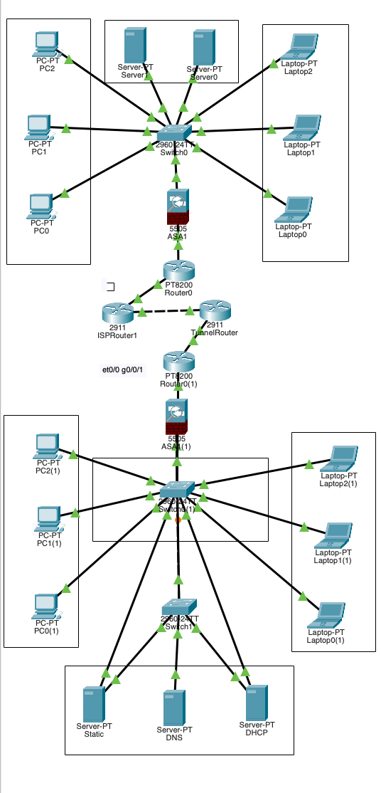
The complete topology. Every device, cable, IP, and VLAN was configured manually.
Architecture
The design follows a standard enterprise WAN pattern: each region has its own security perimeter (ASA firewall), its own edge router, its own internal switching fabric, and its own services stack. The two regions meet at an ISP router, with a dedicated GRE tunnel router providing the inter-site path.
Region 1 — Headquarters Region 2 — Branch Office 192.168.1.0/24 192.168.2.0/24 | | [ASA 5505] [ASA 5505] Firewall Firewall | | [Router0 PT8200] [Router0(1) PT8200] 203.0.113.x 203.0.114.x | | └──────────[ISP Router 2911]──────────┘ | [TunnelRouter 2911] GRE Tunnel0 — 10.10.10.0/30
Region 1 — Headquarters
| Component | Device | IP Address |
|---|---|---|
| Firewall | Cisco ASA 5505 | 192.168.1.1 inside / 203.0.113.6 outside |
| Edge Router | Cisco PT8200 | 203.0.113.2 / 203.0.113.5 |
| Access Switch | Cisco 2960-24TT | 192.168.1.200 mgmt |
| DHCP + DNS Server | Server-PT | 192.168.1.100 |
| HTTP Server | Server-PT | 192.168.1.101 |
| End Devices | 3 PCs + 3 Laptops | 192.168.1.10–50 via DHCP |
Region 2 — Branch Office
| Component | Device | IP Address |
|---|---|---|
| Firewall | Cisco ASA 5505 | 192.168.2.1 inside / 203.0.114.6 outside |
| Edge Router | Cisco PT8200 | 203.0.114.2 / 203.0.114.5 |
| User Switch | Cisco 2960-24TT | 192.168.2.200 mgmt |
| Server Switch | Cisco 2960-24TT | 192.168.2.201 mgmt |
| DHCP + DNS Server | Server-PT | 192.168.2.100 |
| HTTP Server | Server-PT | 192.168.2.101 |
| Static Server | Server-PT | 192.168.2.102 |
| End Devices | 3 PCs + 3 Laptops | 192.168.2.10–50 via DHCP |
WAN Infrastructure
| Component | Device | IP Address |
|---|---|---|
| ISP Router | Cisco 2911 | 203.0.113.1 / 203.0.114.1 |
| Tunnel Router | Cisco 2911 | 10.1.1.2 / 10.10.10.2 |
| GRE Tunnel | Tunnel0 interface | 10.10.10.0/30 |
Full IP Addressing Scheme
| Device | Interface | IP Address | Role |
|---|---|---|---|
| ASA1 | Vlan1 | 192.168.1.1/24 | R1 inside gateway |
| ASA1 | Vlan2 | 203.0.113.6/30 | R1 outside WAN |
| ASA1(1) | Vlan1 | 192.168.2.1/24 | R2 inside gateway |
| ASA1(1) | Vlan2 | 203.0.114.6/30 | R2 outside WAN |
| Router0 | Gi0/0/0 | 203.0.113.2/30 | R1 WAN to ISP |
| Router0 | Gi0/0/1 | 203.0.113.5/30 | R1 to ASA |
| Router0(1) | Gi0/0/0 | 203.0.114.2/30 | R2 WAN to ISP |
| Router0(1) | Gi0/0/1 | 203.0.114.5/30 | R2 to ASA |
| ISPRouter1 | Gi0/0 | 203.0.113.1/30 | ISP Region 1 side |
| ISPRouter1 | Gi0/1 | 203.0.114.1/30 | ISP Region 2 side |
| TunnelRouter | Gi0/0 | 10.1.1.2/30 | Tunnel endpoint |
| TunnelRouter | Tunnel0 | 10.10.10.2/30 | GRE tunnel |
| Switch0 | Vlan1 | 192.168.1.200/24 | R1 switch management |
| Switch0(1) | Vlan1 | 192.168.2.200/24 | R2 switch management |
| Switch1 | Vlan1 | 192.168.2.201/24 | R2 server switch mgmt |
| Server0 | Fa0 | 192.168.1.100/24 | R1 DHCP + DNS |
| Server1 | Fa0 | 192.168.1.101/24 | R1 HTTP |
| Server0(1) | Fa0 | 192.168.2.100/24 | R2 DHCP + DNS |
| Server1(1) | Fa0 | 192.168.2.101/24 | R2 HTTP |
VLAN Design
Traffic is segmented across three VLANs on all switches, with 802.1q trunking between switches and toward ASA uplinks. Separating users, servers, and management into different VLANs is a fundamental security control — lateral movement between a compromised user device and a server requires passing through the firewall, not just hopping across a flat layer-2 domain.
| VLAN | Name | Purpose |
|---|---|---|
| 10 | USERS | End-user workstations and laptops |
| 20 | SERVERS | DHCP, DNS, HTTP, and static servers |
| 30 | MANAGEMENT | Switch and router management plane |
Spanning Tree Protocol (STP) portfast trunk was applied to all uplinks after Problem #11 — default STP was blocking trunk ports during convergence, silently dropping traffic for several seconds on every topology change.
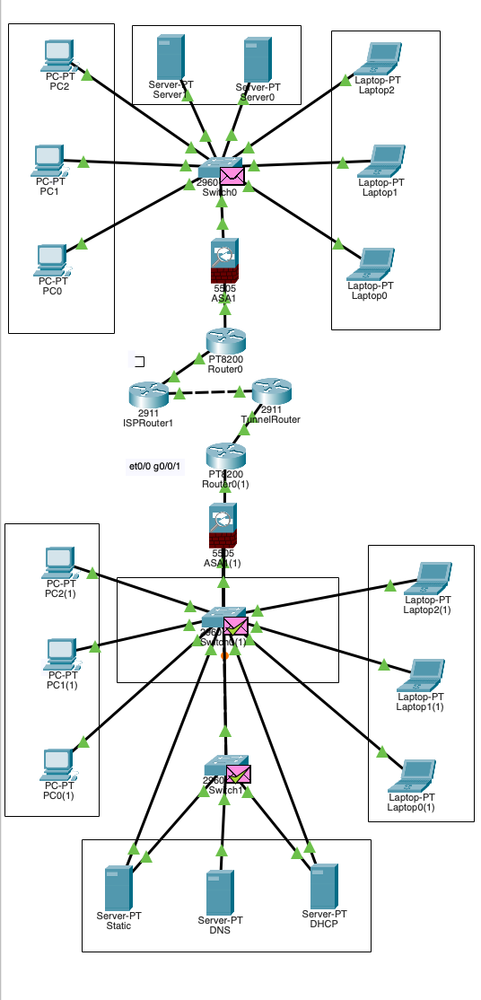
STP fully converged with portfast trunk on uplinks — no more blocked ports killing traffic.
Routing — From Static to OSPF
Static routes were the starting point. They worked, but any topology change required manual updates across every router — brittle and operationally unacceptable in a multi-region design. OSPF Area 0 was deployed across all routers to make routing dynamic and self-healing.
The critical configuration mistake was using a wildcard mask that was too broad in the
network statement. OSPF was being advertised on unintended interfaces, preventing
adjacency formation. The fix was to use the exact interface IP with a 0.0.0.0 host
wildcard — precise, unambiguous, and correct.
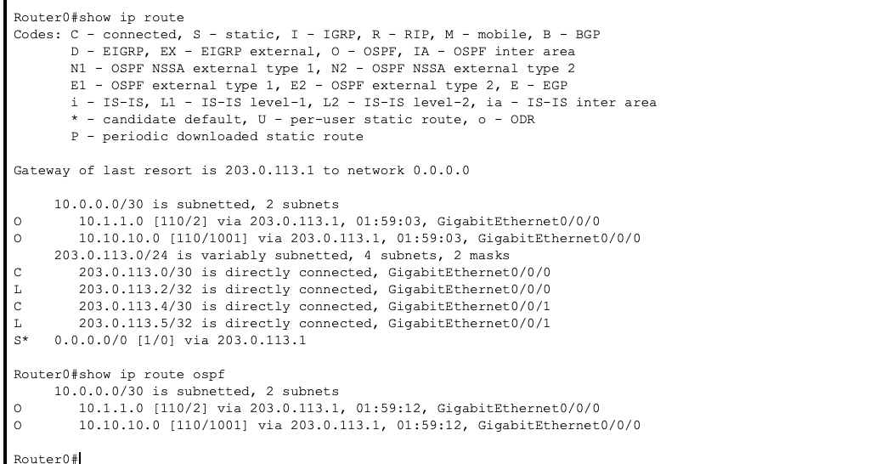
Region 1 router — OSPF routes to Region 2 in the table.
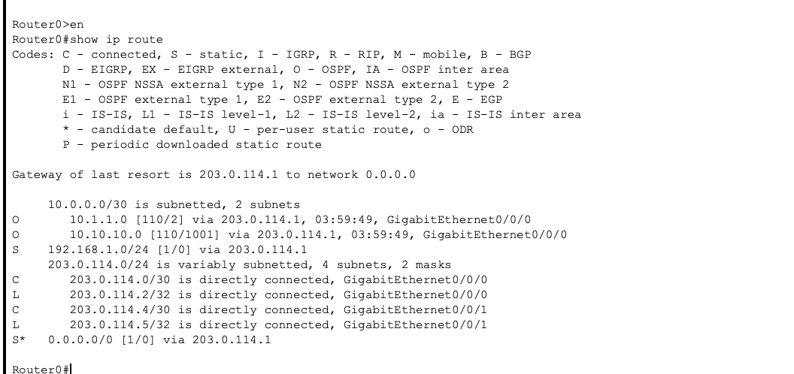
Region 2 router — symmetric routes back to Region 1 confirmed.
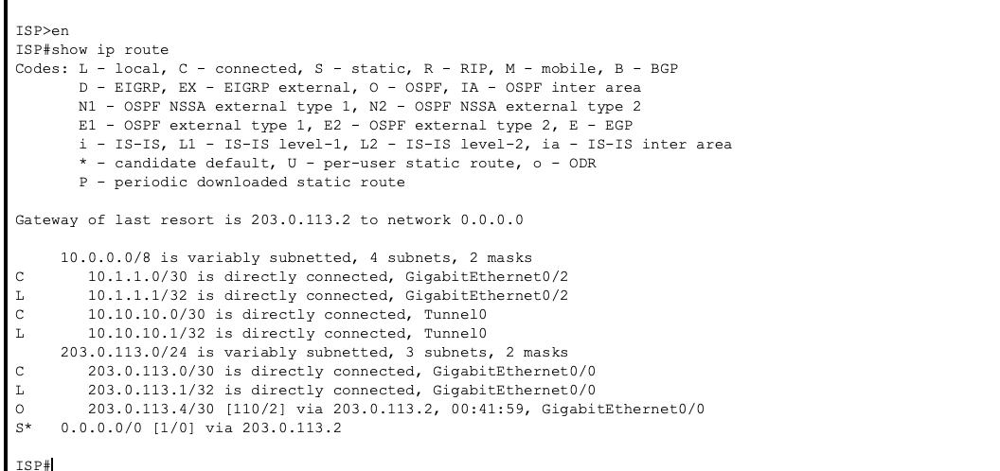
ISP router — both regional WAN prefixes present.
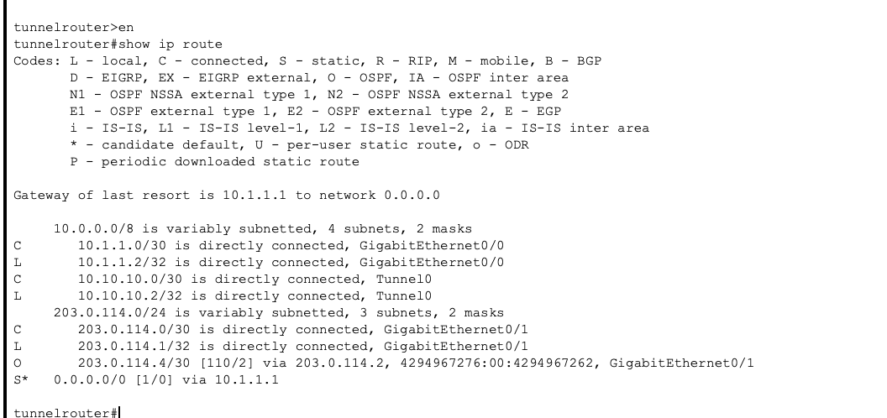
Tunnel router — GRE Tunnel0 routes confirmed on both sides.
OSPF Convergence
After the wildcard mask was corrected, OSPF converged cleanly across all routers in Area 0. Both regions see each other's subnets through dynamically learned routes. Any link failure or topology change now triggers automatic reconvergence — no manual intervention required.
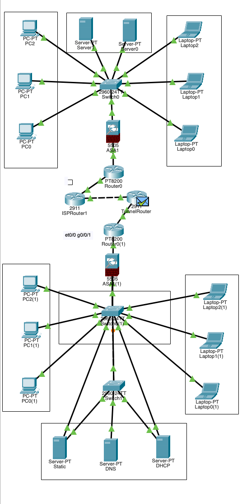
OSPF converged — all O-marked routes confirmed.
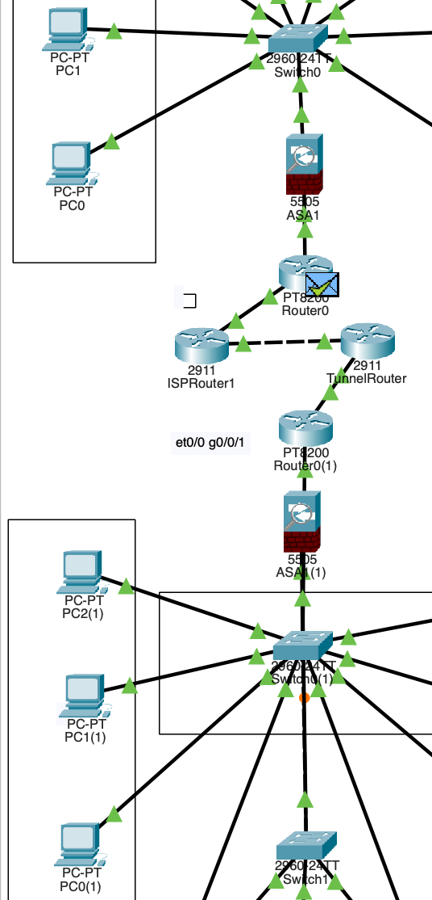
Region 1 OSPF table — full inter-region visibility.
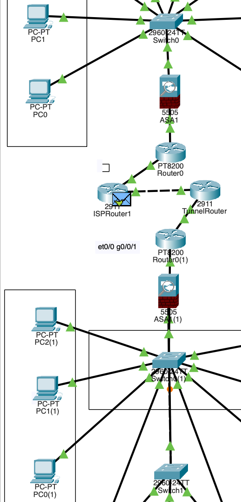
Final OSPF state — all routers in Area 0, all subnets reachable.
Connectivity Testing
Intermediary Ping Test — Mid-Debug Snapshot
This screenshot was taken partway through the OSPF migration, while static routes were being replaced and some paths were still broken. The colour-coded lines show the exact state of the network at that moment:
Green — Ping succeeded. Route correct, firewall permitted the flow.
Red — Ping failed. Missing route or firewall ACL blocking the path.
Orange — Ping reached the ASA inside interface and stopped. Correct ASA behaviour — the firewall responds to pings on its inside interface from the local subnet but does not forward them onward. The security zone boundary is working as designed.
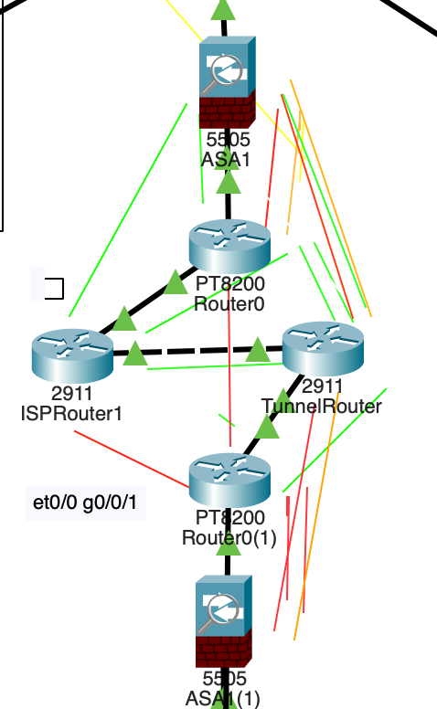
Mid-build debug snapshot. Red = broken, Green = working, Orange = firewall boundary responding correctly.
OSPF Ping — After Convergence
After OSPF convergence and ACL correction, intra-region connectivity is solid. Cross-region pings are blocked by the ASA firewalls by design — enforcing the perimeter policy between regions is the correct behaviour for this architecture.
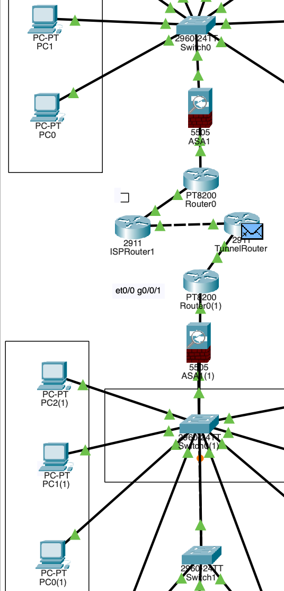
Intra-region ping success after OSPF convergence and ACL correction.
PC Ping After DHCP
End devices receive IPs from DHCP, acquire the correct default gateway, and immediately reach their local gateway and VLAN peers. This confirms the full stack — DHCP, DNS, VLAN assignment, and gateway config — is operating correctly end-to-end.
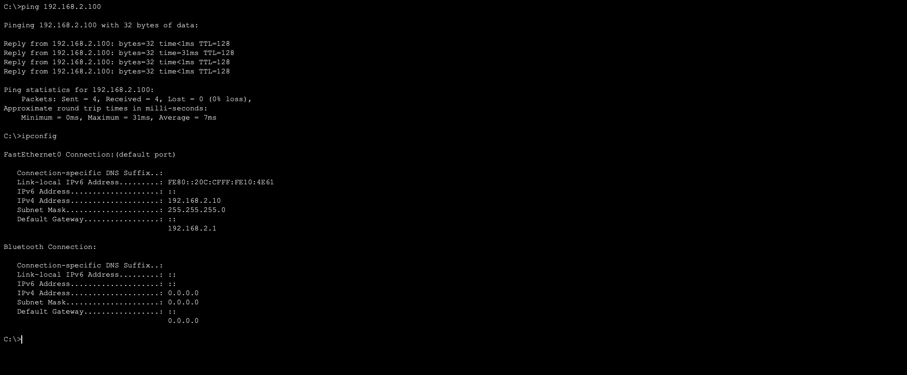
PC pinging its gateway after DHCP assignment — DHCP discovery to ICMP reply, working.
DHCP — Services Stack
Both regions run independent DHCP servers on dedicated Server-PT instances with static IPs. Static IPs on servers are not optional — a DHCP server that gets its own address dynamically will eventually change it, breaking DNS resolution for every device that depends on it. All servers were assigned static IPs before any services were configured.
DHCP, DNS, and NTP run together on the primary server per region. HTTP is isolated on a separate Server-PT to keep service boundaries clean.
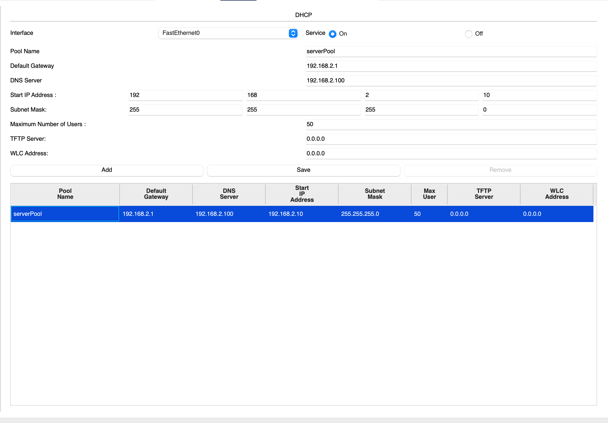
DHCP lease table — end devices across both VLANs assigned correct addresses and gateways.
| Service | Device | IP | Protocol |
|---|---|---|---|
| DHCP (R1) | Server0 | 192.168.1.100 | UDP 67/68 |
| DNS (R1) | Server0 | 192.168.1.100 | UDP 53 |
| NTP (R1) | Server0 | 192.168.1.100 | UDP 123 |
| HTTP (R1) | Server1 | 192.168.1.101 | TCP 80 |
| DHCP (R2) | Server0(1) | 192.168.2.100 | UDP 67/68 |
| DNS (R2) | Server0(1) | 192.168.2.100 | UDP 53 |
| NTP (R2) | Server0(1) | 192.168.2.100 | UDP 123 |
| HTTP (R2) | Server1(1) | 192.168.2.101 | TCP 80 |
Security Controls
Every security control in this design maps to an ISO 27001 clause. The mapping is not decorative — it forced each decision to be justified against a specific security objective rather than configured by habit. A firewall without defined security zones is just a router. VLANs without trust boundary enforcement are cosmetic. The controls here are deliberate.
| Control | Implementation | ISO 27001 | Status |
|---|---|---|---|
| Perimeter Firewall | ASA 5505 security zones | A.13.1 | Done |
| Network Segmentation | VLANs 10 / 20 / 30 | A.13.1.3 | Done |
| NAT / PAT | Dynamic PAT on ASA | A.13.1 | Done |
| Port Security | Sticky MAC, violation restrict | A.9.4.2 | Done |
| Time Synchronisation | NTP on all devices | A.12.4.4 | Done |
| Redundancy | Dual switches in Region 2 | A.17.1 | Done |
| Dynamic Routing | OSPF Area 0 across all routers | A.13.1 | Done |
| WAN Tunnelling | GRE between regions via 2911 | A.10.1 | Done |
| ACL Hardening | Specific permit / deny rules | A.13.1 | In progress |
| Centralised Logging | Syslog server | A.12.4.1 | PT limitation |
| IPSec VPN | Encrypted tunnel over GRE | A.10.1 | GNS3 pending |
Cross-region pings between end devices are intentionally blocked by the ASA firewalls. This is the perimeter security policy working correctly — not a limitation. Inter-region application traffic would be permitted via explicit ACL rules in a production deployment.
15 Problems Solved
Every failure here is the kind of failure that occurs on physical hardware. The value is not in the list — it is in understanding the root cause of each one.
Packet Tracer Limitations
Packet Tracer is a simulator, not an emulator. These gaps are documented honestly — they inform what the GNS3 rebuild will address.
ip helper-address. Workaround: DHCP served from a dedicated static-IP server.clock set per device.Community Validation
The topology was posted to r/PacketTracer with a single screenshot and a straightforward title:
"Posting what I built here since I don't know what else to do with it."
— r/packettracer, the post that hit #1 all-timeBy the next morning it had been shared 95 times, held a 100% upvote ratio, and climbed to the #1 all-time top post on the subreddit. What made that significant was not the numbers — it was who was responding. Working network engineers, CCNA candidates, and infrastructure architects across the United States, India, and Germany shared it through professional study groups and forums.
People who build and operate real enterprise infrastructure recognised this architecture as production-correct. That is the most meaningful measure of whether the design decisions — the security zones, the VLAN segmentation, the OSPF over static, the GRE tunnel, the ISO 27001 mapping — were the right ones.
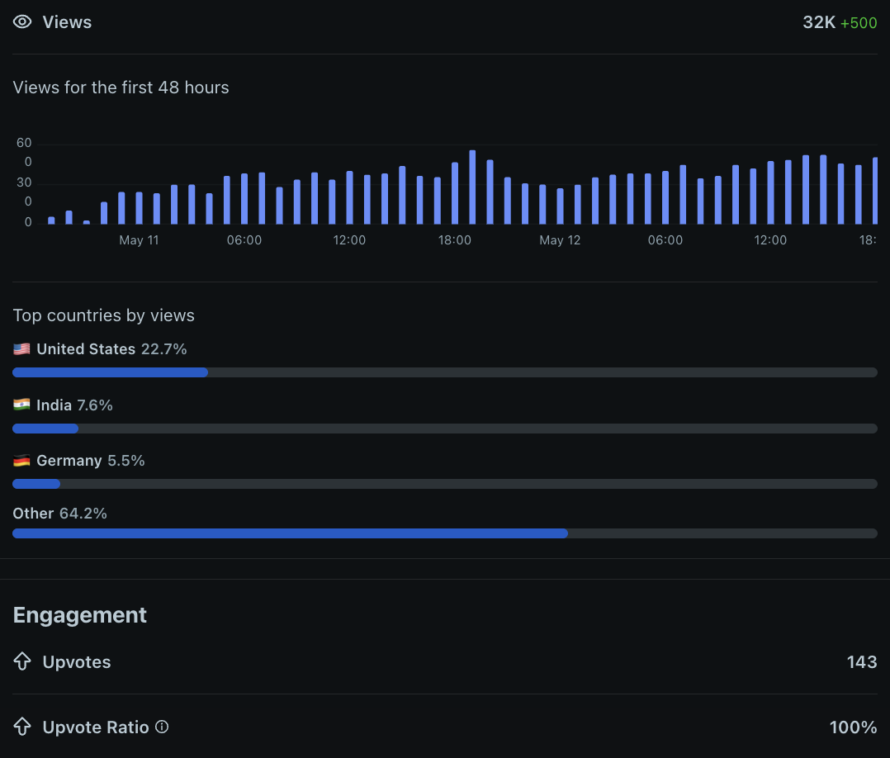
The original post is live on Reddit — read it here. The discussion thread is where network engineers across three continents validated the architecture.